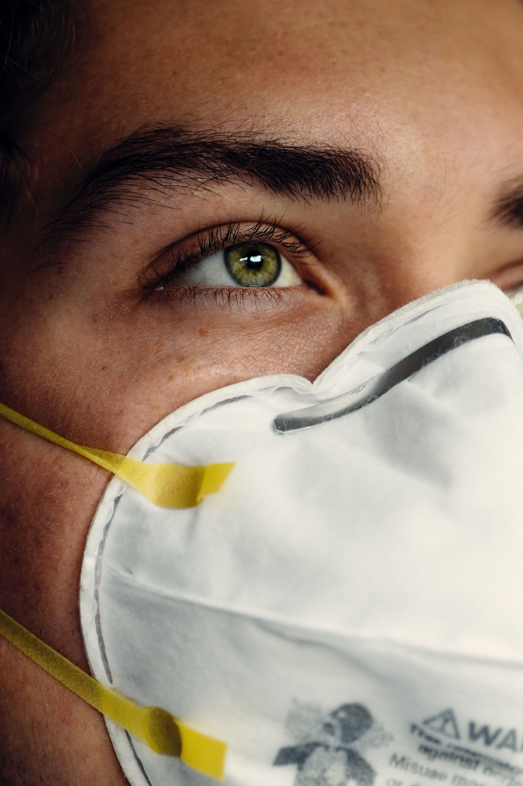

ATENCION A:
- Neonatos
- Niños
- Adultos
- Pacientes con discapacidad

Información más detallada en la sección de pacientes
Mi nombre es Virginia Emilia Perlo, soy fonoaudiologa recibida el el 04/10/2020 en la Universidad Nacional de Cordoba.
Actualmente me encuentro finalizando la licenciatura. Soy muy apasionada con el tema, disfruto mucho de ayudar a que mis pacientes mejoren, poder ver el progreso, estar ahí para acompañarlos, y ver la felicidad de mis pacientes y sus seres cercanos al rehabilitar ciertos aspectos de su comunicación.
Estoy trabajando en el sanatorio "XXX" en el centro de Villa Allende. (días tal tal y entre horas tal tal) El resto de dias atiendo turnos particulares en Cordoba Capital, en el barrio de Nueva Córdoba.

Información más detallada en la sección de pacientes
Por las condiciones establecidas por la pandemia, es de importancia el conocer sobre el covid-19 y los protocolos a manejar. Los protocolos que manejo de forma imperativa son los siguientes: Seccion de pacientes
Poder rehabilitar la comunicación de mis pacientes con su entorno. Disfruto el ver su felicidad y la de sus seres cercanos al mejorar.